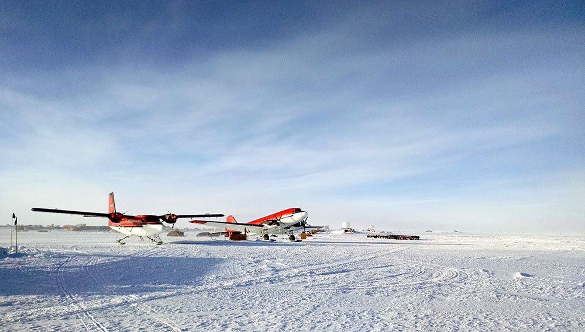
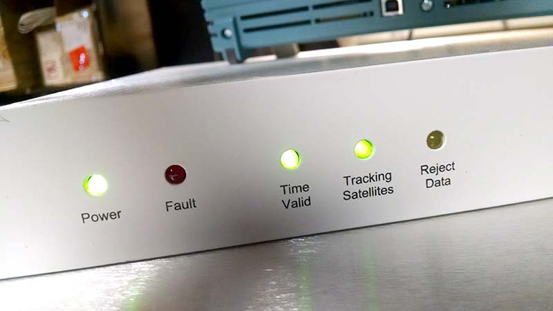
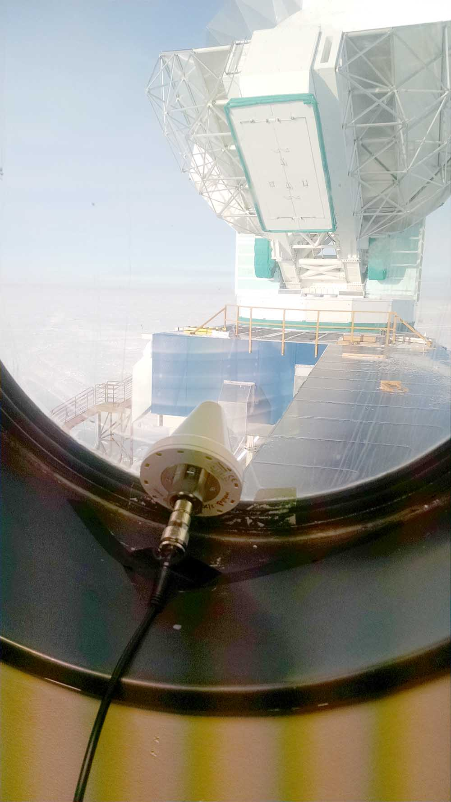

Captain's Web Log(5) - 27 Feb 2016 - Is the "Last Flight" really the last flight?
No. No it's not.
So I wrote all about station close last Tuesday, and how we weren't going to see another plane or anyone other than the 48 of us winterovers until late October.
Turns out that was all a lie. Kind of.
So the flight last Tuesday, heralded as the "Last Flight" was indeed the last Herc (aka LC-130). It was also the last round-trip flight from McMurdo to Pole and back. But it was
NOT the last plane to pass through Pole for the season. Lo and behold, two more secret bonus planes appeared last week (ok, they weren't that secret... Station management and the people who handle communications and fueling for the planes certainly
knew they were coming,
but I took the whole Last Flight thing at its word so I was not a little surprised to see two planes suddenly appear in the aircraft parking area one evening). They were a Twin Otter and a Basler, on their way from other parts of the continent and
headed for Rothera, then Punta Arenas, Chile, and continuing north to Canada
to be decommissioned for the winter season. They'll make the reverse trip and come back to the ice in the Austral summer. They were supposed to just pass through for a day or so, but they were stuck for a week waiting out bad weather here and
in Rothera. It was pretty strange having six new faces wandering around the station after thinking we weren't expecting anyone new for 8 months.

The actual last planes. Basler on the right, Twin Otter on the left. Fun fact: if anyone becomes deathly ill over the winter and has to be emergency-evacuated, it's the Twin Otters that can land and takeoff here in the middle if winter
if absolutely necessary.
They both tried to fly out a few days ago during a break in the weather at Rothera, but both ended up coming back. The Twin Otter's wings started icing up in a bad patch of weather along the way, and it had to turn back out of concern that the
ice would get too thick and make the plane unflyable. The Basler caught a much higher than expected headwind, and found they no longer had enough fuel to make the whole trip with a safe reserve. Both planes caught another break in the weather on Thursday
and both finally made it out for real. I happened to be walking back from the telescope when the Twin Otter was taking off, and I got stopped at the crossing beacon waiting for them to clear the runway. It was quite an impressive takeoff!
Winds were quite high, and kicking up a lot of blowing snow. Visibility was so bad that even though I was waiting right at the end of the runway, I never saw the plane; I only heard the rumble of its engines as it took off. The runway is
positioned parallel to the prevailing wind direction, so at least they weren't trying to take off in a cross-wind.
What I've been up to:
We had a major failure of our GPS system last week. We use GPS to provide timing to all of our data-gathering systems. Without the timing from the GPS, it's impossible to line up the data streams from all of the detectors and
the various other system monitors. So while it's possible in principle to observe without the timing system, it would be pointless since the data would never line back up and could never be analyzed. We never did figure out exaclty
what caused the original failure, but we were able to bypass the malfunctioning components with a GPS receiver borrowed from the BICEP collaboration (thanks guys!). I can't tell you how happy I was to see that green "time valid" light
in the photo below

All hail the Time Valid light! Sharp eyes belonging to giant nerds will notice that the blue thing sitting on top of it is the back of a 90s-vintage Tekscope. Tekscope: helping figure out what
the heck is wrong with everything from your table-top experiment to your half-million pound telescope since 19-whatever

Bonus: A-number-1 best GPS antenna mounting scheme: window sill + a single piece of electrical tape. Don't worry this was only a spare, precariously taped like that for half an hour for testing the new setup.
The real one lives on the roof in the Antarctic elements. Much safer.
Current conditions
Temperature: -31F/-35C (unseasonably warm)
Windchill: -56F/-49C
Wind: 9.7 kts Grid 19
Barometer: 693.8 mb (10,112 ft/3,082m)